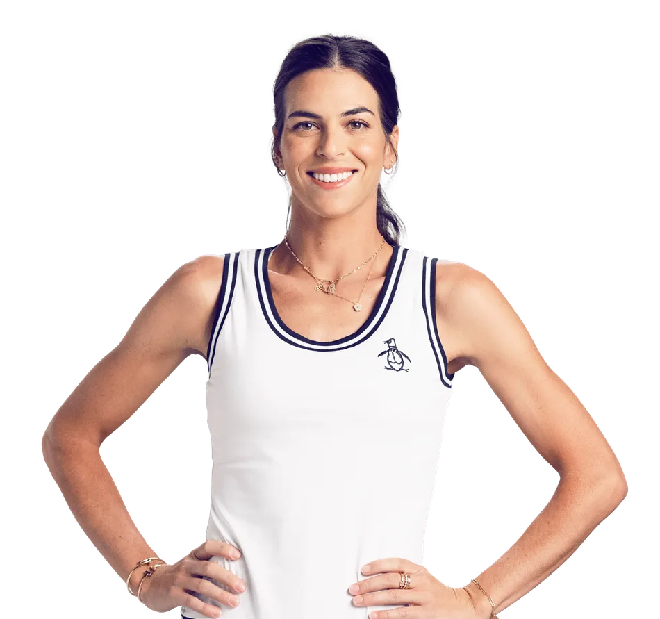

WTA player to 11/19/23 to 11/26/23 : Ajla Tomlajanovic

Ajla had not really played that much this year due to a very serious knee injury. Prior to this tournament, she had played less than 10 matches all season. Additionally,Ajla hadn't won any type of title in over 10 year since her 4th itf title. This week , Ajla played 5 matches , two were 3 setters and 3 were 2 setters. In Ajla's second round match against Ipek Oz of Turkey she saved 4 match points , winning the match 5-7, 7-6, 7-5. This match allowed Ajla to have a lot of confidence and to win the other matches very easily. In the final, she beat Martina Capurro Taborda of Argentina 6-1 , 7-5. This week gave Ajla a confidence boost and should allow her to have a sucessful 2024 season.